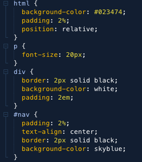
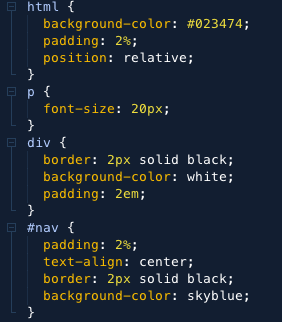

This tutorial is about LESS. It is a pre processor that is used to make css more maintainable. It provides use of variables, mixins, functions, and many other techniques. LESS has been one of the most popular CSS Pre-processors around, and has also been widely deployed in numerous front-end frameworks like Bootstrap. According, to their website LESS is a dynamic stylesheet language.
This tutorial will help you understand, what LESS is and how to use it for your development.
LESS syntax is non-standard. The browser would not be able to render the file output, despite it being very similar to CSS. The purpose of LESS is to turn LESS code into browser compatible CSS code. This is achieved by the LESS compiler.
 

LESS can be used in multiple ways. The first and easiest way is to install less on your computer. After which it can be compiled on the command line. To install less you have to type the following command in a command window:
Here you first have to make sure that you have the node.js package manager installed on your device.
This will help in making the download easy.
After install the command line can be used to compile LESS files to CSS files.
Using the following command to compile a less file and output a CSS file.
This is the most preferred method to use LESS as you want to compile your less file, and have the compiler output a CSS file, which is what is linked in your HTML file.
LESS can also be used from the client. It is the easiest way to get started with learning LESS, although
it is recommended to download LESS onto the device when performance and reliability is desired.
Your .less file should be linked in your code with the rel attribute set to "stylesheet/less"
Next, you have to download less.js and include it in a script tag of the head element.
Another way to use LESS is to use a Graphical User Interface application. There are many different GUI's available that will help in writing LESS code. Some of these are:
| App | Platform |
|---|---|
| Mixture | OS X / Windows |
| Koala | OS X / Windows |
| Prepos | OS X / Windows |
Another option is to use Code editors (IDE's), such as Netbeans. You have to install the LESS plugin to be able to compile LESS files. In Netbeans for example, every time you save the less file, it automatically complies the LESS file and saves the output to a CSS File.
LESS syntax is more like a programming language. It has variables, Operation, and Scope. While it may behave like a programming language, it is also very similar looking to CSS. In essence, it is a blend of CSS and general programming syntax.
LESS stylesheets allow us to use variables to store certain properties that require frequent use
just like in any programming language.
An example of variables being used is provided below.
In the example above, we store certain properties in variables. This helps us as when you would want to change a particular style you would only have to change the variable, instead of combing through the CSS file, and trying to change every element that has that property.
In LESS you can reuse entire from one CSS ruleset into another. For example
Here is a class definition of certain properties. This can be called directly in another element. In CSS this is what the elements would look like.
LESS allows us to have nested rules. The parent element is declared first, and then the child elements of the parent are declared in a nested structure.
This essentially is the same as typing something like this in CSS.
LESS is a powerful too that every web developer should have. It makes designing websites easier, and less time consuming. The reasoning behind this tutorial is to inform people know about how to use LESS, and to see how it adds to a developer's tool set. Hopefully, this tutorial has convinced some of you to try LESS out.